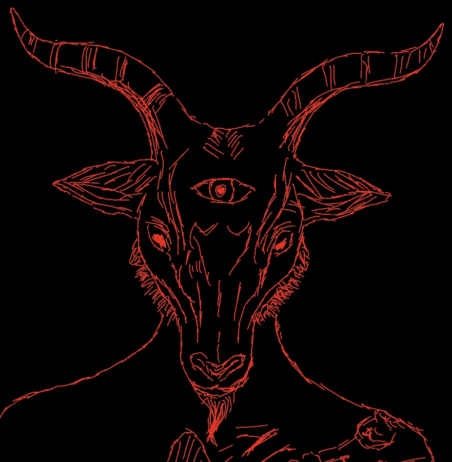

Über den Templvm Carnis
Wer von einem Tempel hört, der denkt sofort an eine Sekte oder eine reliöse Organisation. Der Templvm Carnis sieht sich jedoch weniger als Organisation, auch wenn er dies in gewisser Hinsicht ist, sondern eher als Konzept zum Aufbau eines satanistischen Tempels, der seine Mitglieder befähigt ihren eigenen linkshändigen Pfad zu erforschen.
Das dabei zum Einsatz kommende Magiesystem orientiert sich stark an Schriften des Order of Nine Angles (O.N.A. oder auch O9A), lehnt aber Teile davon aus verschiedenen Gründen ab. So wird es zum Beispiel keinen "Tempel 88" mehr im TC geben, so wie es in der Vergangenheit der Fall war. Das Experiment war in gewissen Teilen durchaus interessant, muss aber in der Konsequenz aus verschiedenen Gründen als gescheitert betrachtet werden, die wir hier nicht weiter darlegen werden. Auch die derzeit zu beobachtende Tendenz zur Unterstützung radikalislamischer Strömungen liegt nicht im Interesse der Ziele des TC.
Auch wenn das Konzept dahinter, dass man die Projektion Satans auf den Teil der Gesellschaft setzt, der aktuell gerade als "das Böse" angesehen wird, auf den ersten Blick sinnvoll erscheint, schränkt es doch die freie magische Entwicklung des Individuums massiv ein. Außerdem haben wir die Erfahrung gemacht, dass eine Gemeinschaft, so gross oder klein sie auch sein mag, nur funktioniert, wenn gewisse Regeln aufgestellt werden. Diese Regeln ergeben sich jedoch bereits aus der Natur des Satanismus selbst. So gehen wir davon aus, dass jeder Mensch ein Tor für Schöpfungsenergie darstellt und als solches in der Lage ist ein Universum (und natürlich auch das Multiversum) zu formen. Entsprechend hat jeder Mensch den gleichen Wert, unabhängig davon ob er diese Energie nutzt oder nicht. Damit sind Systeme wie der Nationalsozialismus oder der radikale Islamismus nicht mit Satanismus vereinbar, denn diese widersprechen den Grundlehren der Magie und würden den praktizierenden Satanisten an gesellschaftliche Vorstellungen fesseln und somit einschränken.
Anstatt sich damit zu plagen "längst tot gerittene Pferde zu satteln", orientiert sich der Templvm Carnis lieber an noch lebendigen Praktiken des (linkshändigen) Tantra und ergänzt mit diesen die vielen Lücken, die die (wenn auch sehr zahlreichen) Texte des O9A haben. Weiterhin finden sich in unseren eigenen Texten einige Korrekturen, wodurch so manche Techniken erst ihre tatsächlich mögliche Effizienz erreichen können.
